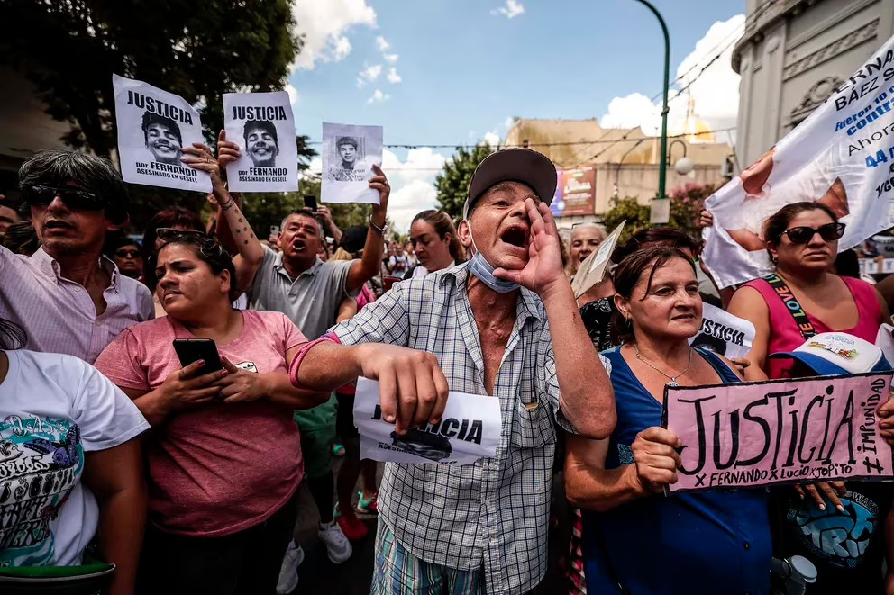

Notas
Los ocho acusados fueron condenados –cinco a reclusión perpetua, tres a 15 años– al cabo de un juicio que estremeció a la sociedad y generó polémicas y debates.

Luego del veredicto del lunes pasado, los ocho condenados por el crimen de Fernando Báez Sosa continúan juntos en el mismo pabellón de la Alcaidía N°3 de Melchor Romero que fue su hogar durante más de dos años. Su vida no cambió mucho: comparten las mismas celdas en esquemas de a dos y continúan con sus recreos de dos o tres horas en el patio, lejos del resto de la población carcelaria común.
Varios psicólogos los visitan a diario, confirmaron fuentes penitenciarias a Infobae, algo que es relativamente común para condenados que enfrentan sentencias largas, o de prisión o reclusión perpetua. Todos ellos recibieron las visitas de sus familiares y allegados en la última semana, ratificaron las mismas fuentes.
Distintas versiones publicadas por diversos medios indicaron que los rugbiers se encontraban separados bajo un protocolo de resguardo de integridad física por miedo a que se lesionen a sí mismos tras el veredicto del Tribunal Oral en lo Criminal N°1 de Dolores. Se habló hasta de temor a que se quiten la vida. Incluso, se dijo que Máximo Thomsen habría sido enviado a una celda solitaria tras peleas con varios de sus cómplices. Altas fuentes consultadas por este medio aseguran que ambos rumores son falsos.
El problema, sin embargo, no es el presente, sino el futuro. La situación en la Alcaidía N°3 es transitoria. Hoy, se aguarda que el tribunal disponga sus traslados. Podrán ser separados para ser enviados a distintos penales. Dónde alojar a los condenados por el crimen más resonante de la última década supone un desafío para el Servicio Penitenciario Bonaerense. El “ensañamiento mediático”, tal como lo define una figura que trabaja en el problema, repercute rejas adentro.
Hoy, canales de televisión entrevistan a supuestos presos que dicen que violarán a los rugbiers para convertirlos en “sus mujeres”. “Esto carga a los detenidos”, asegura la fuente.
Thomsen fue el único de los acusados que se refirió a sus días en la cárcel, en su monólogo ante la fiscal del caso, Verónica Zamboni, también en febrero de 2020.
“Quiero aclarar que en la cárcel no estamos como dicen los medios, que dicen que tenemos aire acondicionado, que tenemos ventiladores, que somos presos VIP cuando en realidad estamos toda la noche escuchando lo que nos dicen otros presos, que nos gritan que tienen precio nuestras cabezas, que Burlando los va a defender, que nos quieren violar. Nos gritan de todo por la ventana”, dijo por entonces.
Sin embargo, hasta hoy, en más de tres años, Thomsen y sus compañeros de causa no sufrieron ataque alguno, gracias a su aislamiento, que dista enormemente los aislamientos regulares marcados como castigos internos.

El resguardo de integridad física podrá ser mantenido, pero la situación de alcaidía es provisoria, no eterna. “La cárcel incluye, escuela, talleres, iglesia, campo de deportes, encuentro familiar, visitas; un montón de cosas que en la alcaidía no tiene, ya que están encerrados todo el día y solo salen al recreo”, recuerda un funcionario. Es precisamente en estas actividades que no existen en alcaldías en que podrían tener interacciones con otros detenidos que lleven a riñas y ataques. Herir o victimizar a otro preso más mediático o famoso para subir en jerarquía es una constante en la vida tumbera.
Los condenados por matar a Fernando Báez Sosa se encontrarán con el principal problema del SPB: el hacinamiento y la sobrepoblación. Las cárceles bonaerenses tienen una capacidad nominal para cerca de 30 mil detenidos. Hoy, superan los 52 mil, de acuerdo a datos oficiales. El penal de Campana, el más cercano a Zárate, sería el más idóneo para encerrarlos: la cercanía a las familias es un criterio que suele primar. Lo que ocurre en la práctica es otra cosa.
Hoy, Campana se encuentra hacinado. Los rugbiers podrían ser alejados de sus familias, alojados en cárceles del interior bonaerense profundo, en unidades donde suele haber un 90 por ciento de detenidos de otras jurisdicciones.